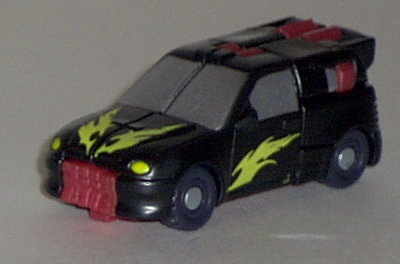
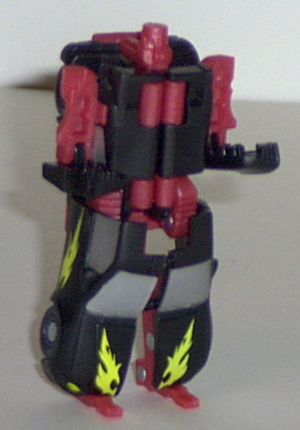
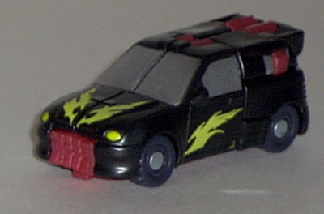
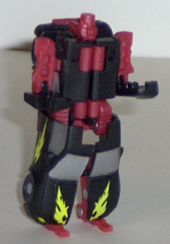
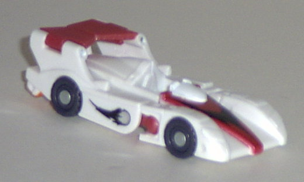
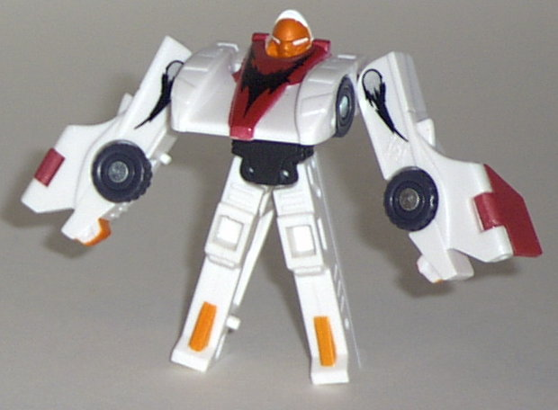
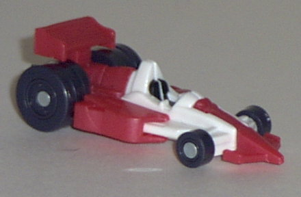
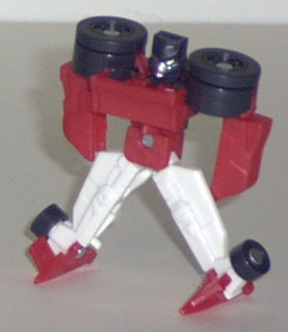
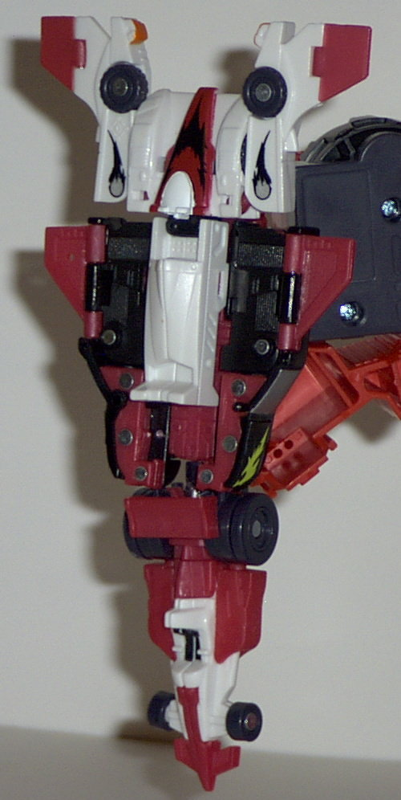

Dirt
Boss
Dirt
Boss
 
Difficulty of Transformation : Very Easy
Color Scheme : Black, flat cherry red, silver, and some yellow and bluish-black
Individual Rating : 7.5
Road
Assault Team
Allegiance
: Minicon
Size
: Mini-Con (3-pack)
Team Gimmick
: Ability to combine
into the
Skyboom
jet/shield
Overall Rating:
5.0
(NOTE: Because this set is a repaint, this
is not a full-blown review. This mainly covers any changes made to the
mold and the color scheme, and merely compares it the Race Team. For a
review on the mold itself, read the review of the Race Team
here
.)
Dirt
Boss


Difficulty of Transformation
: Very
Easy
Color Scheme
: Black, flat cherry
red, silver, and some yellow and bluish-black
Individual Rating
: 7.5
Dirt Boss' new color
scheme rocks. Although not bad, the main problem I had with his old color
scheme was that darned flat yellow. Now, he's got some yellow, but they're
cool flame decos on his hood and side doors, which looks much better. Black
and red is now his primary color scheme, and it looks awesome, as you would
expect. The silver windows also contrast nicely with both of the colors.
Still no paint detailing on that face... though I suppose it would wear
off over time, considering that his head is the handle for the Skyboom
shield. In fact, this version of Dirt Boss is just about as good as you
can expect the mold to get.
No mold changes have
been made to Dirt Boss.
Downshift


Difficulty of Transformation
: Very
Easy
Color Scheme
: White, flat cherry
red, black, and some bright orange, silver, and bluish-black
Individual Rating
: 4.1
This time around, Downshift
has a primarily white color scheme, with some red and black thrown in for
good measure. It's a pretty nice color scheme in and of itself, and I think
a slight improvement over the old dark-gray-and-yellow scheme, because
it contrasts slightly better. Plus, those red and bright orange parts go
together well with Downshift's flaming silver fireballs decoed on his sides
and the black "flame" pattern on the front red stripe of the car. All in
all, it looks pretty nice. Too bad about the mold, though...
No mold changes have
been made to Downshift.
Mirage


Difficulty of Transformation
: Very
Easy
Color Scheme
: Flat cherry red, white,
and some bluish-black, black, and silver
Individual Rating
: 3.9
Mirage has a similar
color scheme to his teammate Downshift this time; primarily white and red,
with a bit of black. However, although it's not noticeable on other Road
Assault Team members because their wheels are small, it becomes apparent
on Mirage here that the "black" used for their wheels is actually some
kind of impure bluish-black which frankly doesn't look near as good as
regular black would have. Odd... Unlike the other Road Assault members,
Mirage hasn't been given any flame decos or anything like that. Just plaaaiin
old red-and-white. Although at least it's better than ugly yellow and gray.
No mold changes have
been made to Mirage.
Skyboom
(Gestalt Form)

Difficulty of Transformation
: Easy
Color Scheme
: Flat cherry red, black,
white, and some bluish-black, silver, bright orange, and yellow
Individual Rating
: 4.4
Nothing really to say
about the Skyboom shield form that I haven't already said about the three
component members of the set. Looks a bit better without all that ugly
yellow in there- the black, red, and white go together pretty well. Those
couple of flame patterns on Dirt Boss and Downshift also look pretty cool
on the big shield as well.
No mold changes have
been made to Skyboom.
Overall, I'd have to recommend the Road Assault Team over their more widely-available Race Team counterparts. The colors mesh together much better, and minimal yellow is used, and even then it's only on a nifty flame deco on Dirt Boss. The molds themselves aren't really that great, though (with the exception of Dirt Boss), so the Road Assault Team still stands on one of the lowest rungs of the Minicom Teams ladder.
No Stats
Review by Beastbot